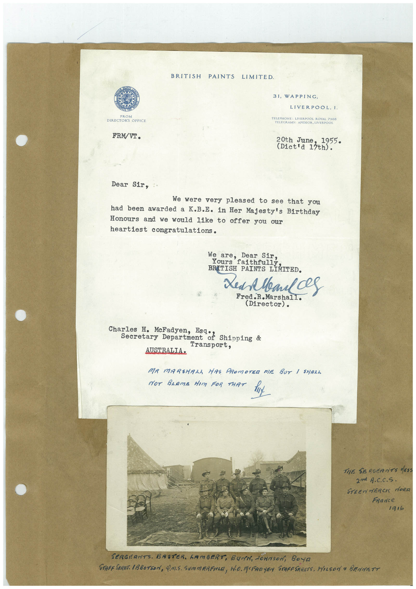

Book 1 · scan 158


Description
Transcription
Context
Review notes
Compare the machine draft with the scan. Handwriting and names need human review.
Artifacts
Edit the artifacts field in this note’s frontmatter to change these records. This summary is generated.
B01-S158-A01 — Letter, Photo & Handwritten note — Book 1, scan 158
Types: Typed document, Letter, Photo, Handwritten note
Scope: Whole scanned page; individual items can be split out during review.
Caption: Not mapped yet.
Caption source: Not recorded yet.
Caption status: unmapped
Machine transcription
BRITISH PAINTS LIMITED. FROM DIRECTORS GREECE FRM/VI. 31, WAPPING, LIVERPOOL, I. TELEPHONE: LIVERPOOL ROYAL 7368 TELEGRAMS: APEXIOR, LIVERPOOL 20th June 1955 (Dict'd 13th). Dear Sir, We were very pleased to see that you had been awarded a K.B.E. in Her Majesty's Birthday Honours and we would like to offer you our heartiest congratulations. We Dear Sir, Yours ars falth ully BRITISH PAINTS LIMITED. Xed Meals Fred.R.Marshall. (Director). Charles H. McFadyen, Esq: Shipping & Secretary Department Transport, AUSTRALIA• MR MARSHALA HAS PROMOTER DIE BUT / SHALL NOT BRamA dIm FOR THAT Hu THE SERGEANTS MESS 2m A.C.C.S. STEENMERCK MORA FRance 1916 SERGERNTS. BASTER. GAMBERT, BurN, JOHNson, BOya STAFF SEROT. ABBOTSON, 4.M.S. SUMMERFIELD, WD. MOFADYEN STAFFSERETS, WILSON a BENNETT